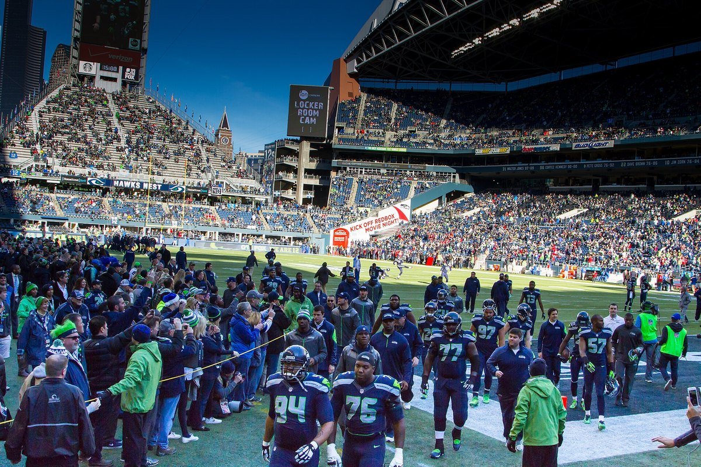

49ers vs Seahawks Preview: Win in Seattle and the NFC West Is Ours
Sunday, 1:25 PM Pacific at Lumen Field on FOX. We're 4 and 0, Seattle's 3 and 1, and somehow the Seahawks are the ones favored. A win puts us two games up with the tiebreaker in our pocket five weeks in. A loss and we're tied with the team I like least on this planet.

I've been staring at this game since Sunday night. Kittle broke that screen, we went up 24 to 14 on Denver, I sat back down on the couch, and before I'd even stopped shaking my first thought was: okay, now Seattle.
That's what this rivalry does to you. You can't even enjoy 4 and 0 for a full evening.
So look at the standings. The Niners are 4 and 0 and alone at the top of the NFC West. Seattle's 3 and 1, a game back. The Rams are 2 and 2 and the Cardinals are 1 and 3, and both of them already lost to us. Sunday afternoon at Lumen Field, we get to decide whether the division is a race or whether it's ours to lose.
Why this is the one that decides the division early
Win and we're 5 and 0, two games clear of Seattle, and we own the head to head going into the rematch at Levi's on November 29. That's not clinching anything in October and I'm not dumb enough to say it is. But two games plus the tiebreaker this early is about as close to control as you get in this league before Halloween.
Lose and it flips. Tied at 4 and 1, they've got the win over us, and every Seattle fan I know (I know too many, I work with two of them) gets to spend the next seven weeks telling me the 4 and 0 start was a soft schedule.
I'm not giving them that. I'm really not.
And honestly? The line kind of insults me. Seattle's favored by 3 at home. Three points for home field, fine, that's the standard math. But it also means the people who set these numbers look at our 4 and 0 and their 3 and 1 and say they're dead even on a neutral field. We've scored 122 points and given up 64. They've scored 105 and given up 73, and they lost a 33 to 31 shootout to Washington three weeks ago. I'll take the points and the chip on the shoulder, thanks.
Brock hasn't been sacked. Not once.
I keep checking this number like it's going to change when I'm not looking. Four games, zero sacks. Brock's 79 of 113 for 1,007 yards with 11 touchdowns and one interception, and he hasn't been on the ground one time after a pass play all season.
I don't care who you've played. That's an offensive line doing something special, and it's Brock getting the ball out on time, and it's Kyle calling a game where the quarterback always knows where he's going.
Seattle's going to test it harder than anybody has. Their defense has 11 sacks in four games, Leonard Williams has three of them, and they've picked off six passes. That's a real front. Ernest Jones IV is all over the field in the middle with 41 tackles. And in that building, with the noise coming down on the offensive line on every snap, the false starts and the late snaps are what scare me more than any one pass rusher.
If we're still at zero sacks by the fourth quarter, we win this game. I'd bet my season tickets on it if I had the guts.

How we win it
Third down and the red zone
We're converting 57.5 percent of our third downs. Seattle's offense is converting 31.1 percent. That's the whole game for me if it holds up. Stay on the field, keep their crowd sitting down, and make Seattle's defense play 70 snaps.
And when we get inside the 20 we've scored every time this year. Every trip. I don't expect that to last forever, but I'd like it to last one more week, because field goals in Seattle are how you lose by four.
Feed Christian and then feed George
McCaffrey's got 218 rushing yards and four touchdowns. We're running for 137 a game at 4.8 a carry. The way you take a road crowd out of it is to lean on the run in the first quarter and make them watch you grind out eight minute drives.
Then Kittle. Sixteen catches, 244 yards, four touchdowns, and he just won us the Denver game on a screen. I want him on their linebackers all afternoon. Somebody in that secondary is going to end up on him one on one, and I already know how that ends.
We're doing it without Juice, which still bugs me. A knee sprain and a bone bruise, two to three weeks. On a day like this, when you want to be able to line up and push people in short yardage, he's the guy you miss.
What Seattle has, and what scares me
Jaxon Smith-Njigba. That's the list. Okay, it's not the whole list, but he's the top of it. He's got 32 catches for 481 yards and six touchdowns in four games, and he's the guy who can turn one bad rep by a corner into seven points.
The quarterback situation's been a little weird for them. Drew Lock threw most of their passes the first two weeks, and Sam Darnold's been back for the last two, 44 of 67 for 547 yards with six touchdowns and three picks in that stretch. Darnold's capable of carving you up, and he's also capable of throwing it to you. I'd like to see the second Sam Darnold on Sunday, please.
On the ground they're thinner than they want to be. Zach Charbonnet's out with a torn ACL, George Holani's questionable with a rib injury, and Emanuel Wilson's been carrying it, 53 times for 190 yards. That's 3.6 a carry. If our front can make them one dimensional early, Darnold's going to have to hold the ball against Greenlaw and Warner, and I like that matchup a lot.

The injuries hurt, mostly on our defensive front
This is the part I don't love. Nick Bosa's out again with the calf. Mykel Williams is done with the ACL. James Thompson Jr. is out with an ankle, Marques Sigle's out at safety, and Upton Stout's questionable with his shoulder.
That's a lot of bodies. We've only got six sacks as a team and that's the number that worries me most, because Seattle's line has given up six of its own and Darnold isn't the guy you want sitting back there with all day to throw. Somebody has to get home. Keion White has two sacks, and I'd love to see him double that on Sunday.
The good news is the middle of the defense is as good as it gets. Fred Warner has 40 tackles, Greenlaw just put up 12 against the team that cut him, and those two together make any offense that wants to run between the tackles regret it.
What a win would really mean
Everybody's been calling us the team to beat in the NFC since Monday, and I've been nodding along, but I haven't fully bought it yet. Not because of anything we've done. Because of where we haven't done it yet.
We've played one road game this year, and it was in Australia against a Rams team that got smoked. Every other game's been at Levi's. Going into Seattle, in front of that crowd, against a 3 and 1 team that's favored, and walking out 5 and 0? That's the answer to every question anybody's had about this team since August. And it's the moment a lot of people, Cowherd included, have been waiting to see Brock do it in.
The schedule after this isn't nothing either. Washington comes to Levi's on Monday night, then we go to Atlanta. Get to 5 and 0 and get through those two, and by the time Seattle comes to our place on November 29, they're playing to stay alive, not to catch up.
My prediction
I keep going back and forth on this, and I hate that I do. Seattle at home is always a fight. Their defense is better than any we've seen except maybe Denver's, and that crowd is a real thing.
But we're better. I've watched every snap of all four games and I believe that. Brock's protected, the run game works, the red zone is perfect, and the middle of our defense is the best in football. I'll take the team that converts third downs and doesn't give the ball away.
49ers 27, Seahawks 20. Kittle scores, McCaffrey goes over 100, and I spend the last two minutes standing up in my living room again, which seems to be how this season is going to go.
Two games up in the NFC West. Five and oh. I'll see you Sunday.
More coverage: 49ers · 49ers 2026 schedule · 49ers injury report · NFL · Bay Area Sports Blog home